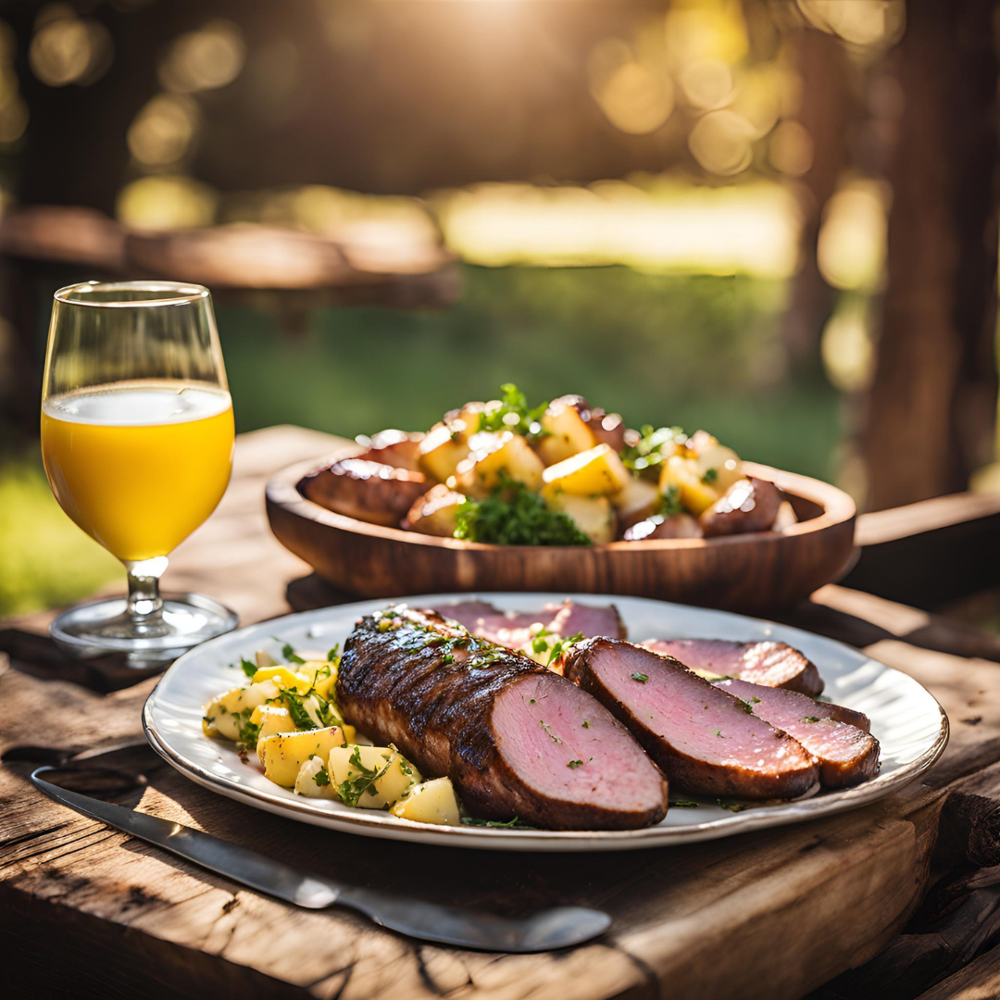

Picanha Com Chimichurri
90 min
Intermediário
6 porções
Ingredientes
Para a Picanha:
- 1 peça de picanha (cerca de 1,2kg)
- Sal grosso a gosto
- Pimenta do reino moída na hora
Para o Chimichurri:
- 2 maços de salsinha fresca
- 1 maço de coentro fresco
- 4 dentes de alho
- 1 pimenta dedo de moça (sem sementes)
- 1/2 xícara de azeite de oliva
- 2 colheres de sopa de vinagre de vinho tinto
- 1 colher de chá de orégano seco
- Sal e pimenta a gosto
Modo de Preparo
Chimichurri:
- Pique finamente a salsinha, o coentro, o alho e a pimenta
- Em uma tigela, misture as ervas e temperos picados
- Adicione o azeite, vinagre, orégano, sal e pimenta
- Misture bem e deixe descansar por pelo menos 30 minutos
Picanha:
- Retire a picanha da geladeira 1 hora antes do preparo
- Tempere generosamente com sal grosso
- Preaqueça a churrasqueira ou grelha
- Grelhe a picanha com a gordura para cima inicialmente
- Vire a carne após formar uma crosta dourada
- Cozinhe até atingir o ponto desejado
- Deixe descansar por 10 minutos antes de fatiar
- Sirva com o chimichurri por cima
Dicas do Chef
- Faça cortes em diagonal na gordura para melhor distribuição do calor
- O chimichurri fica ainda melhor se preparado no dia anterior
- Sempre fatie a carne contra as fibras
Pontos da Carne
Temperatura interna:
- Mal passada: 48°C - 54°C
- Ao ponto para mal: 55°C - 60°C
- Ao ponto: 61°C - 66°C
- Ao ponto para bem: 67°C - 71°C
- Bem passada: acima de 71°C